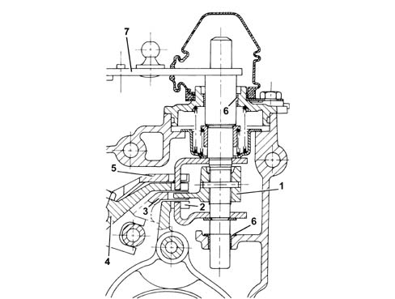
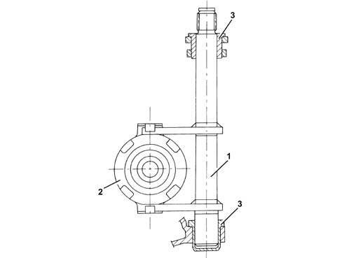

2110C GEAR CASES AND COVERS OF MANUAL GEARBOX WITH DIFFERENTIAL
- Path
- Descriptions > 21 GEARBOX UNIT > 2110 MANUAL GEARBOX WITH DIFFERENTIAL > 2110C GEAR CASES AND COVERS OF MANUAL GEARBOX WITH DIFFERENTIAL
- Kind
- system description
- Applies to
- all engines; all production periods
- Interactive page
- https://sloeber94.github.io/elrnDB-aGt/en/#/125000330
Applies to: all engines; all production periods
COMPONENT DESCRIPTION
GEAR SELECTION/ENGAGEMENT SYSTEM
Specifications
Type
There are four selection levels for the gear selection/control system with the gear positioner fitted with a bearing.
The system ensures that it is impossible to accidentally engage Reverse gear as it is on a separate level.
Specific features of the system
Two bushes (6) with a Permaglide covering have been used to reduce friction at:
- the couplings between the gear selector/engagement control shaft and the gearbox casing;
- the couplings for the selector fork rods and the gearbox casing.
The bushes make it possible to:
- achieve improved sliding;
- ensure better gear engagement precision.

1 - Selector pawl
2 - 1st - 2nd speed engagement/selector fork
3 - 3rd - 4th speed engagement/selector fork
4 - 5th - 6th speed engagement/selector fork
5 - Reverse gear engagement/selector fork
6 - Permaglide bushes
7 - Gear engagement lever
CLUTCH CONTROL
Specifications
Structure
The clutch control consists of:
- a fork bearing (1) fitted inside the clutch casing;
- a thrust bearing (2) fitted on the main shaft.
The fork bearing is supported by the Permaglide bushes (3) which make it possible to:
- reduce the force required to operate the clutch pedal;
- eliminate the use of grease;
- limit the wear of the coupling.
